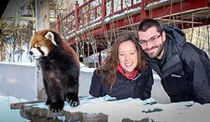
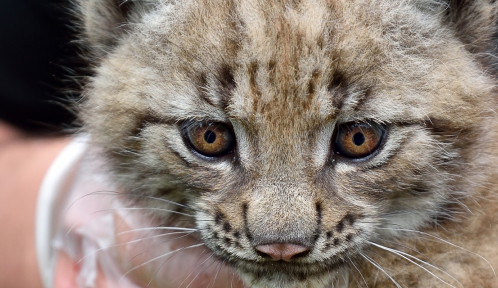
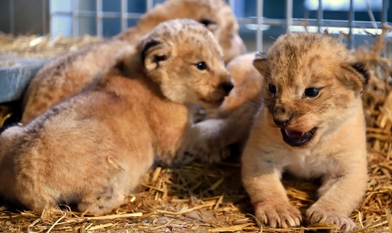

Parrainage
- Parents adoptifs
- Découvrez le programme Parents adoptifs
- Qui peut adopter un animal
- Comment doit-on faire?
- Prêt à parrainer
- Communiquez avec notre service à la clientèle
Parents adoptifs

Vous avez le coup de foudre pour l'une des vedettes de la collection animale du Zoo de Matanie. Vous aimeriez vous impliquer dans le bien-être de nos pensionnaires? C'est maintenant possible avec notre programme Parent adoptif.
Découvrez le programme Parents adoptifs
Grâce à cette initiative, vous créez un lien unique avec l’animal de votre choix. Vous contribuez également aux soins de nos pensionnaires dont les besoins alimentaires sont très variés :
- 50 000 kg de nourriture sèche
- 15 500 kg de viande
- 300 douzaines d’œufs
- 2 300 kg de carottes
- 65 000 grillons
- 13 800 rats et souris
- 34 000 vers de farine
- 95 000 kg de foin… et plus encore!
Qui peut adopter un animal ?
N’importe qui peut adopter un animal du Zoo de Matanie : particulier, famille, groupe scolaire, entreprise, club social…
Pour souligner un événement, c’est un présent exotique et complètement original.

Quels sont les plans d’adoption annuels?
Tentés d’adhérer aux programmes Parents adoptifs? Nous vous offrons plusieurs façons d’en profiter.
Voir les plans d'adoptionComment doit-on faire?
Adopter un animal, c’est tout simple. Voici la procédure à suivre, en 4 étapes :
- Choisissez votre animal favori
- Sélectionnez votre plan d’adoption
- Complétez le formulaire
- Postez-le avec votre contribution, à l’ordre de la Société zoologique de Granby
Attention! Prêt à parrainer
Animaux à adopter recherchent parents bien particuliers.
Elles nous font rire avec leurs pitreries ou nous font pousser des « Oh! » et des « Ah! » admiratifs : ce sont les vedettes du Zoo de Matanie qui feront chavirer votre cœur.
- Kayah, le panda roux
- Sarah, l'éléphant d'Afrique
- K.C., le rhinocéros blanc
- Polita, l'hippopotame commun
- Masaï, la girafe barigo
- Mazyria, le tigre de l'Amour
- Snowflake, le léopard des neiges
- Zwlani, le gorille des plaines
Et, bien d'autres disponibles…

Communiquez avec notre service à la clientèle
Pour plus d'information, voici nos coordonnées.
Téléphone : 418 562-1240, poste 3258
Courriel : parentadoptif@zoodematanie.com